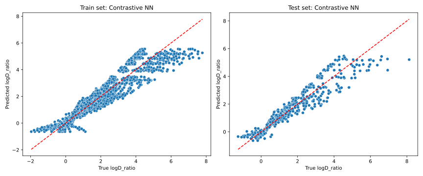
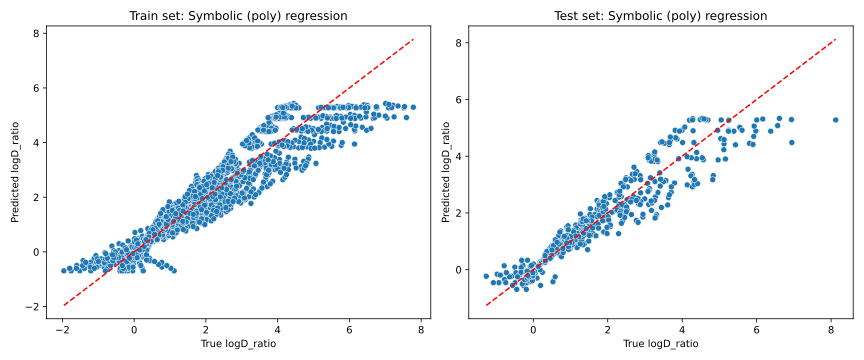
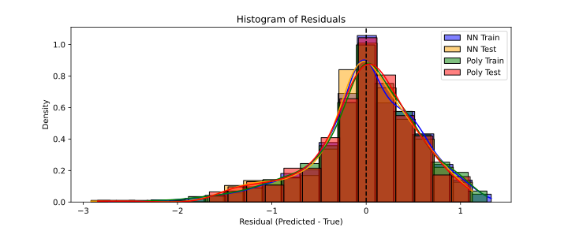
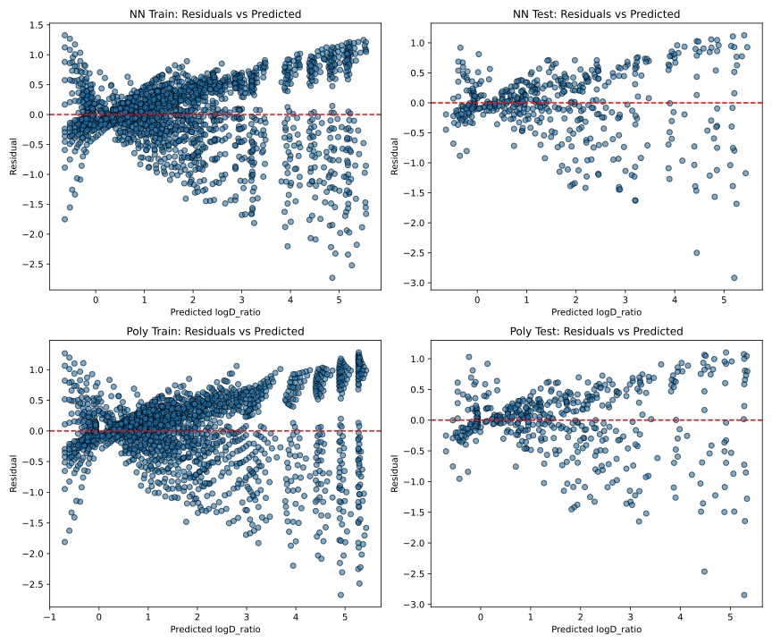
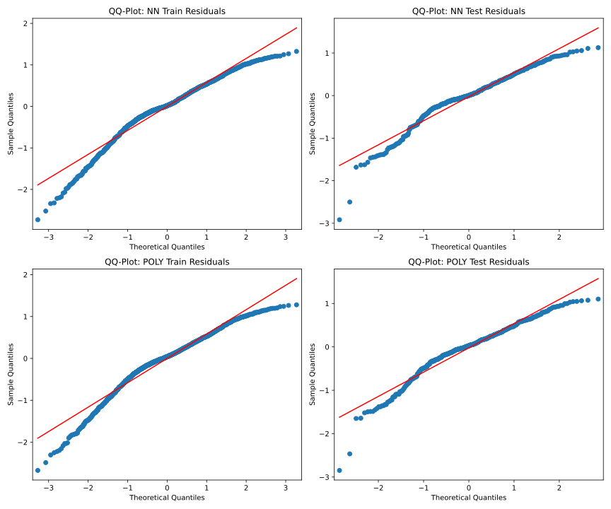
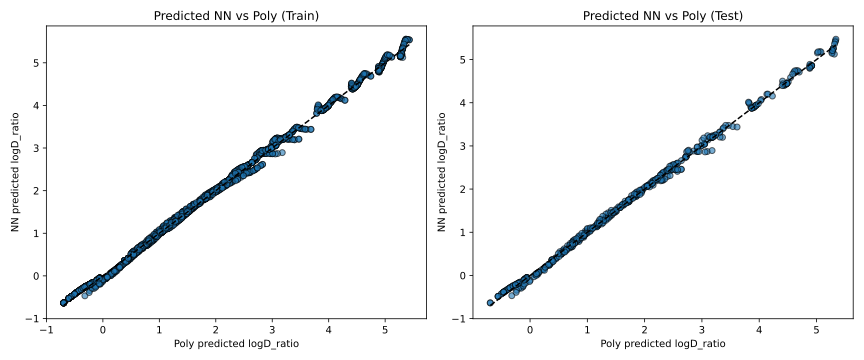
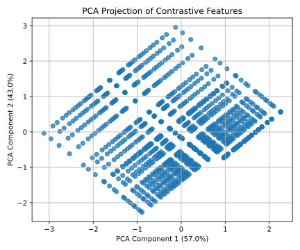

🔬 Contrastive Scaling Laws in Diffusivity Using Neural Networks
✨ Abstract
Contrastive Deep Learning for Generative Simulation (Contrastive GS) is developed to support fast reasoning when simulation datasets are incomplete or when kernels cannot directly provide an answer to complex engineering or scientific questions. This lecture demonstrates how a neural network can recover physically meaningful scaling laws for molecular diffusivity in polymers, based only on contrastive ratios. Diffusivity, typically modeled through hole-free volume theory, is governed by temperature, molecular weight, and polymer state (e.g., rubbery vs. glassy).
We show that contrastive deep learning can bridge symbolic physical kernels and black-box inference methods by reconstructing embedded scaling laws from relative data. A neural network is compared with symbolic regression baselines and evaluated through visual diagnostics and dimensionality reduction.
1. 🧠 Theoretical Background
Diffusivity \(D\) of a molecule in a polymer can be modeled as: $\( \frac{D}{D_0} = \left(\frac{M}{M_0}\right)^{-\alpha(T,T_g)} \)$
\[ \text{with} \quad \alpha(T,T_g) = 1 + \frac{K_a}{K_b + r(T - T_g)} \]\(M\): molecular weight of the substance
\(M_0\), \(D_0\): reference values
\(T\): temperature in K, \(T_g\): glass transition temperature
\(r\): state parameter (\(r=1\) in rubbery state)
\(K_a \approx 140\) K, \(K_b \approx 40\) K (rough estimates here)
📚 References:
These models are not foundational in a unified theory of mass transport in glassy and rubber polymers based on free volume, cohesive energy, and thermodynamic fluctuations. They are described in detail in:
Xiaoyi Fang, Sandra Domenek, Violette Ducruet, Matthieu Réfrégiers, and Olivier Vitrac.
Diffusion of Aromatic Solutes in Aliphatic Polymers above Glass Transition Temperature.
Macromolecules, 2013, 46 (3), 874–888.
https://doi.org/10.1021/ma3022103Yan Zhu, Frank Welle, and Olivier Vitrac.
A Blob Model to Parameterize Polymer Hole Free Volumes and Solute Diffusion.
Soft Matter, 2019, 15, 8912–8932.
https://doi.org/10.1039/C9SM01556F
2. 🧪 Synthetic Data Generation
We simulate diffusivity for two polymers (PP and HDPE) with prescribed \(tT_g\) by computing \(D\) across a grid of molecular weights \(M\) and temperatures \(T\).
For each combination of \(M\) and \(T\), we compute:
\(D = D_0 \left(\frac{M}{M_0}\right)^{-\alpha(T,Tg)}\)
General Configuration
# Generic configuration
import numpy as np
import pandas as pd
import matplotlib.pyplot as plt
from IPython.display import display, HTML
# add headtail() method to pd
def headtail(self,n=10):
if self.shape[0] <= 2 * n:
return self._repr_html_()
else:
top = self.head(n)
bottom = self.tail(n)
ellipsis = pd.DataFrame([["..."] * self.shape[1]], columns=self.columns)
combined = pd.concat([top, ellipsis, bottom])
return combined._repr_html_()
pd.DataFrame.headtail = headtail
# extra pd control
pd.set_option("display.max_rows", 100) # Show more rows
pd.set_option("display.max_columns", 20) # Show more columns
pd.set_option("display.width", 1000) # Set display width
pd.set_option("display.float_format", "{:.3g}".format) # Format floats
# plot configuration
%config InlineBackend.figure_format = 'svg'
%config InlineBackend.rc = {'figure.dpi': 300}
plt.rcParams['figure.dpi'] = 300
plt.rcParams['savefig.dpi'] = 300
Data Generation
# Ka, Kb, M0, D0, and Tg defined above
# Produces a dataset df with columns: Polymer, M, T, alpha, Dimport numpy as np
# Constants for the scaling law
Ka, Kb = 140, 40 # K
# Polymers with their Tg and r values
polymers = {
'PP': {'Tg': 273, 'r': 1.0},
'HDPE': {'Tg': 173, 'r': 1.0}
}
# Reference values
M0, D0 = 100, 1e-9 # g/mol, m²/s <-- arbitrary reference
# Generate a grid of M and T values
M_values = np.linspace(40, 500, 7) # g/mol
T_values_C = np.linspace(23, 100, 7) # °C
T_values = T_values_C + 273.15 # Convert to Kelvin
# Generate synthetic data
data = []
for polymer, props in polymers.items():
Tg = props['Tg']
r = props['r']
for M in M_values:
for T in T_values:
alpha = 1 + Ka / (Kb + r * (T - Tg))
D = D0 * (M / M0) ** (-alpha)
data.append({
'Polymer': polymer,
'M': M,
'T': T,
'T_C': T - 273.15,
'Tg': Tg,
'alpha': alpha,
'D': D
})
df = pd.DataFrame(data)
# print df overview
display(HTML(df.headtail(10)))
#print(df.headtail(10))
Here the first 10 and last 10 rows.
💡 Note that \(D\) values are not absolutely scaled in this example since the pre-exponential factor has not been set. It is an approximation of the full problem. \(D\) values are scaled respectively to \(D_0(M_0,T)\).
| Polymer | M | T | Tg | alpha | D | |
|---|---|---|---|---|---|---|
| 0 | PP | 40 | 296 | 273 | 3.22 | 1.91e-08 |
| 1 | PP | 40 | 309 | 273 | 2.84 | 1.35e-08 |
| 2 | PP | 40 | 322 | 273 | 2.58 | 1.06e-08 |
| 3 | PP | 40 | 335 | 273 | 2.38 | 8.83e-09 |
| 4 | PP | 40 | 347 | 273 | 2.22 | 7.67e-09 |
| 5 | PP | 40 | 360 | 273 | 2.1 | 6.85e-09 |
| 6 | PP | 40 | 373 | 273 | 2 | 6.24e-09 |
| 7 | PP | 117 | 296 | 273 | 3.22 | 6.09e-10 |
| 8 | PP | 117 | 309 | 273 | 2.84 | 6.45e-10 |
| 9 | PP | 117 | 322 | 273 | 2.58 | 6.72e-10 |
| ... | ... | ... | ... | ... | ... | ... |
| 88 | HDPE | 423 | 347 | 173 | 1.65 | 9.21e-11 |
| 89 | HDPE | 423 | 360 | 173 | 1.62 | 9.71e-11 |
| 90 | HDPE | 423 | 373 | 173 | 1.58 | 1.02e-10 |
| 91 | HDPE | 500 | 296 | 173 | 1.86 | 5.03e-11 |
| 92 | HDPE | 500 | 309 | 173 | 1.8 | 5.56e-11 |
| 93 | HDPE | 500 | 322 | 173 | 1.74 | 6.06e-11 |
| 94 | HDPE | 500 | 335 | 173 | 1.69 | 6.54e-11 |
| 95 | HDPE | 500 | 347 | 173 | 1.65 | 7e-11 |
| 96 | HDPE | 500 | 360 | 173 | 1.62 | 7.42e-11 |
| 97 | HDPE | 500 | 373 | 173 | 1.58 | 7.83e-11 |
3. 🔁 Contrastive Dataset Construction
Instead of absolute diffusivities, we focus on pairwise contrastive ratios:
\(y = \log\left(\frac{D_i}{D_j}\right) = -\alpha \cdot \log\left(\frac{M_i}{M_j}\right)\)
Contrastive features:
\(x_1 = \log(M_i/M_j)\)
\(x_2 = 1/T_i - 1/T_j\)
\(x_3 = T_{g,i} - T_{g,j}\)
\(y = \log(D_i/D_j)\)
# Generates contrastive_df with inputs and log-ratio targets
# %% Contrastive Data
from itertools import combinations
# Create contrastive pairs
df['logD'] = np.log(df['D'])
contrastive_data = []
for polymer in df['Polymer'].unique():
subset = df[df['Polymer'] == polymer].reset_index(drop=True)
for i, j in combinations(range(len(subset)), 2):
row_i = subset.loc[i]
row_j = subset.loc[j]
logD_ratio = row_i['logD'] - row_j['logD']
logM_ratio = np.log(row_i['M'] / row_j['M'])
invT_diff = (1 / row_i['T']) - (1 / row_j['T'])
Tg_diff = row_i['Tg'] - row_j['Tg']
contrastive_data.append({
'Polymer': polymer,
'logM_ratio': logM_ratio,
'invT_diff': invT_diff,
'Tg_diff': Tg_diff,
'logD_ratio': logD_ratio
})
contrastive_df = pd.DataFrame(contrastive_data)
print(f"Generated {len(contrastive_df)} contrastive pairs")
pd.set_option("display.max_rows", 20)
display(HTML(contrastive_df.headtail(10)))
#print(contrastive_df.headtail(10))
Generated 2352 contrastive pairs
| Polymer | logM_ratio | invT_diff | Tg_diff | logD_ratio | |
|---|---|---|---|---|---|
| 0 | PP | 0 | 0.00014 | 0 | 0.343 |
| 1 | PP | 0 | 0.000269 | 0 | 0.587 |
| 2 | PP | 0 | 0.000388 | 0 | 0.769 |
| 3 | PP | 0 | 0.000499 | 0 | 0.911 |
| 4 | PP | 0 | 0.000601 | 0 | 1.02 |
| ... | ... | ... | ... | ... | ... |
| 2347 | HDPE | 0 | 0.000213 | 0 | -0.126 |
| 2348 | HDPE | 0 | 0.000308 | 0 | -0.179 |
| 2349 | HDPE | 0 | 0.000102 | 0 | -0.0593 |
| 2350 | HDPE | 0 | 0.000198 | 0 | -0.112 |
| 2351 | HDPE | 0 | 9.54e-05 | 0 | -0.053 |
4. 🤖 Neural Network Training
Utility Function for Calculating Residual Statistics
import numpy as np
from sklearn.metrics import r2_score, mean_squared_error
def compute_residuals(y_true, y_pred):
y_true = y_true.copy().ravel()
y_pred = y_pred.copy().ravel()
residuals = y_pred - y_true
return {
"actual": y_true,
"predicted": y_pred,
"residuals": residuals,
"mean": residuals.mean(),
"std": residuals.std(),
"rmse": np.sqrt(mean_squared_error(y_true, y_pred)),
"min": residuals.min(),
"max": residuals.max(),
"r2": r2_score(y_true, y_pred)
}
# initialization of the container dict
diagnostics = {
"NN": {
"train": {},
"test": {}
},
"poly": {
"train": {},
"test": {}
}
}
ANN model
We train a small 3-layer feedforward neural network on the scaled contrastive features.
Model: 3 inputs → 32 ReLU → 32 ReLU → 1 output
Change nNN to test different values
# PyTorch model training with MSELoss over 500 epochs
import torch
import torch.nn as nn
import seaborn as sns
from sklearn.preprocessing import StandardScaler
from sklearn.model_selection import train_test_split
from sklearn.metrics import r2_score
# ----- Preprocessing -----
X = contrastive_df[['logM_ratio', 'invT_diff', 'Tg_diff']].values
y = contrastive_df['logD_ratio'].values.reshape(-1, 1)
X_scaler = StandardScaler()
y_scaler = StandardScaler()
X_scaled = X_scaler.fit_transform(X)
y_scaled = y_scaler.fit_transform(y)
# Split the contrastive_df into training and test sets
X_train, X_test, y_train, y_test = train_test_split(X_scaled, y_scaled, test_size=0.2, random_state=0)
# Convert to tensors
X_train_tensor = torch.tensor(X_train, dtype=torch.float32)
y_train_tensor = torch.tensor(y_train, dtype=torch.float32)
X_test_tensor = torch.tensor(X_test, dtype=torch.float32)
y_test_tensor = torch.tensor(y_test, dtype=torch.float32)
# ----- Neural Network -----
nNN = 32
class ContrastiveNet(nn.Module):
def __init__(self):
super().__init__()
self.net = nn.Sequential(
nn.Linear(3, nNN),
nn.ReLU(),
nn.Linear(nNN, nNN),
nn.ReLU(),
nn.Linear(nNN, 1)
)
def forward(self, x):
return self.net(x)
model = ContrastiveNet()
optimizer = torch.optim.Adam(model.parameters(), lr=0.01)
loss_fn = nn.MSELoss()
# ----- Training Loop -----
for epoch in range(500):
model.train()
optimizer.zero_grad()
output = model(X_train_tensor)
loss = loss_fn(output, y_train_tensor)
loss.backward()
optimizer.step()
# ----- Evaluation and inverse transform -----
model.eval()
with torch.no_grad():
y_train_pred_scaled = model(X_train_tensor).numpy()
y_test_pred_scaled = model(X_test_tensor).numpy()
# Inverse scaling
y_train_pred_NN = y_scaler.inverse_transform(y_train_pred_scaled)
y_test_pred_NN = y_scaler.inverse_transform(y_test_pred_scaled)
y_train_true = y_scaler.inverse_transform(y_train)
y_test_true = y_scaler.inverse_transform(y_test)
# ----- R² scores -----
r2_train_nn = r2_score(y_train_true, y_train_pred_NN)
r2_test_nn = r2_score(y_test_true, y_test_pred_NN)
print(f"Contrastive NN R² score (train): {r2_train_nn:.4f}")
print(f"Contrastive NN R² score (test): {r2_test_nn:.4f}")
# Fill diagnostics for NN
diagnostics["NN"]["train"] = compute_residuals(y_train_true, y_train_pred_NN)
diagnostics["NN"]["test"] = compute_residuals(y_test_true, y_test_pred_NN)
# ----- Plotting -----
fig, axs = plt.subplots(1, 2, figsize=(12, 5))
# Train set
sns.scatterplot(x=y_train_true.ravel(), y=y_train_pred_NN.ravel(), ax=axs[0])
axs[0].plot([y_train_true.min(), y_train_true.max()], [y_train_true.min(), y_train_true.max()], 'r--')
axs[0].set_title("Train set: Contrastive NN")
axs[0].set_xlabel("True logD_ratio")
axs[0].set_ylabel("Predicted logD_ratio")
# Test set
sns.scatterplot(x=y_test_true.ravel(), y=y_test_pred_NN.ravel(), ax=axs[1])
axs[1].plot([y_test_true.min(), y_test_true.max()], [y_test_true.min(), y_test_true.max()], 'r--')
axs[1].set_title("Test set: Contrastive NN")
axs[1].set_xlabel("True logD_ratio")
axs[1].set_ylabel("Predicted logD_ratio")
plt.tight_layout()
#plt.savefig("assets/Dfig01.svg", format='svg', dpi=300)
plt.show()
✅ Final \(R^2\) typically > 0.85 on validation set (test).
Contrastive NN R² score (train): 0.8884
Contrastive NN R² score (test): 0.8886

5. 🔢 Symbolic Regression Baseline
We fit a degree-2 polynomial regression as a symbolic benchmark on the same dataset.
# %% symbolic regression
import matplotlib.pyplot as plt
import seaborn as sns
from sklearn.linear_model import LinearRegression
from sklearn.pipeline import make_pipeline
from sklearn.preprocessing import PolynomialFeatures
# Split the contrastive_df into training and test sets
#train_df, test_df = train_test_split(contrastive_df, test_size=0.2, random_state=0)
# Training data
#X_train = train_df[['logM_ratio', 'invT_diff', 'Tg_diff']].values
#y_train = train_df['logD_ratio'].values
# Test data
#X_test = test_df[['logM_ratio', 'invT_diff', 'Tg_diff']].values
#y_test = test_df['logD_ratio'].values
# Use preprocessed and scaled data from earlier (same as NN)
# X_train, X_test, y_train, y_test already exist
# Symbolic regression surrogate: polynomial regression
# Regression pipeline (degree-2 polynomial regression)
poly_model = make_pipeline(
PolynomialFeatures(degree=2, include_bias=False),
LinearRegression()
)
poly_model.fit(X_train, y_train)
# Predict on scaled data
y_train_pred_poly = y_scaler.inverse_transform(poly_model.predict(X_train))
y_test_pred_poly = y_scaler.inverse_transform(poly_model.predict(X_test))
# Plotting
fig, axs = plt.subplots(1, 2, figsize=(12, 5))
# Training set
#sns.scatterplot(x=y_train, y=y_train_pred, ax=axs[0])
sns.scatterplot(x=y_train_true.ravel(), y=y_train_pred_poly.ravel(), ax=axs[0])
axs[0].plot([y_train_true.min(), y_train_true.max()], [y_train_true.min(), y_train_true.max()], 'r--')
axs[0].set_title("Train set: Symbolic (poly) regression")
axs[0].set_xlabel("True logD_ratio")
axs[0].set_ylabel("Predicted logD_ratio")
# Test set
#sns.scatterplot(x=y_test, y=y_test_pred, ax=axs[1])
sns.scatterplot(x=y_test_true.ravel(), y=y_test_pred_poly.ravel(), ax=axs[1])
axs[1].plot([y_test_true.min(), y_test_true.max()], [y_test_true.min(), y_test_true.max()], 'r--')
axs[1].set_title("Test set: Symbolic (poly) regression")
axs[1].set_xlabel("True logD_ratio")
axs[1].set_ylabel("Predicted logD_ratio")
plt.tight_layout()
#plt.savefig("assets/Dfig02.svg", format='svg', dpi=300)
plt.show()
# Return test and training R² scores
from sklearn.metrics import r2_score
r2_train = r2_score(y_train_true, y_train_pred_poly)
r2_test = r2_score(y_test_true, y_test_pred_poly)
print(f"Contrastive NN R² score (train): {r2_train:.4f}")
print(f"Contrastive NN R² score (test): {r2_test:.4f}")
# Fill diagnostics for poly regression
diagnostics["poly"]["train"] = compute_residuals(y_train_true, y_train_pred_poly)
diagnostics["poly"]["test"] = compute_residuals(y_test_true, y_test_pred_poly)

Pros:
Transparent and interpretable
Limited expressivity
6. 📊 Visual Diagnostics & Performance Metrics
We compare:
Predicted vs. actual
\(R^2\) on training and test sets
RMSE and residual distributions (mean, std)
from IPython.display import display, HTML
def safe_fmt(d, key):
return f"{d[key]:.4f}" if key in d else "—"
rows = []
for model_name, model_stats in diagnostics.items():
for dataset, stats in model_stats.items():
rows.append({
"Model": model_name,
"Dataset": dataset,
"R²": safe_fmt(stats, "r2"),
"RMSE": safe_fmt(stats, "rmse"),
"Mean Residual": safe_fmt(stats, "mean"),
"Std Residual": safe_fmt(stats, "std"),
"Min Residual": safe_fmt(stats, "min"),
"Max Residual": safe_fmt(stats, "max")
})
df_stats = pd.DataFrame(rows)
# Render as HTML
html_table = df_stats.to_html(index=False, escape=False, classes="table table-striped", border=0)
display(HTML(html_table))
| Model | Dataset | R² | RMSE | Mean Residual | Std Residual | Min Residual | Max Residual |
|---|---|---|---|---|---|---|---|
| NN | train | 0.8884 | 0.5776 | -0.0002 | 0.5776 | -2.7300 | 1.3251 |
| NN | test | 0.8886 | 0.5655 | -0.0260 | 0.5649 | -2.9169 | 1.1259 |
| poly | train | 0.8866 | 0.5822 | 0.0000 | 0.5822 | -2.6753 | 1.2800 |
| poly | test | 0.8912 | 0.5590 | -0.0237 | 0.5585 | -2.8470 | 1.1021 |
We continue with
Residuals vs predicted
Histograms
QQ plots (normality)
Shapiro-Wilk test for normality
Residuals Distribution
import matplotlib.pyplot as plt
import seaborn as sns
import statsmodels.api as sm
from scipy.stats import shapiro
# Assume diagnostics is already defined and populated
# We'll now define the plotting code using it
figures = {}
# 1. Histogram of Residuals
plt.figure(figsize=(10, 4))
sns.histplot(diagnostics["NN"]["train"]["residuals"], bins=20, kde=True, color='blue', label='NN Train', stat='density')
sns.histplot(diagnostics["NN"]["test"]["residuals"], bins=20, kde=True, color='orange', label='NN Test', stat='density')
sns.histplot(diagnostics["poly"]["train"]["residuals"], bins=20, kde=True, color='green', label='Poly Train', stat='density')
sns.histplot(diagnostics["poly"]["test"]["residuals"], bins=20, kde=True, color='red', label='Poly Test', stat='density')
plt.axvline(0, color='k', linestyle='--')
plt.title("Histogram of Residuals")
plt.xlabel("Residual (Predicted - True)")
plt.legend()
figures["Histogram of Residuals"] = plt.gcf()
#plt.savefig("assets/Dfig03.svg", format='svg', dpi=300)
plt.show()

Residuals vs Predicted
# 2. Residuals vs Predicted
fig, ax = plt.subplots(2, 2, figsize=(12, 10))
models = ["NN", "poly"]
datasets = ["train", "test"]
titles = [["NN Train", "NN Test"], ["Poly Train", "Poly Test"]]
for i, model in enumerate(models):
for j, dataset in enumerate(datasets):
ax[i, j].scatter(
diagnostics[model][dataset]["predicted"],
diagnostics[model][dataset]["residuals"],
alpha=0.6, edgecolor='k'
)
ax[i, j].axhline(0, color='r', linestyle='--')
ax[i, j].set_title(f"{titles[i][j]}: Residuals vs Predicted")
ax[i, j].set_xlabel("Predicted logD_ratio")
ax[i, j].set_ylabel("Residual")
plt.tight_layout()
figures["Residuals vs Predicted"] = plt.gcf()
#plt.savefig("assets/Dfig04.svg", format='svg', dpi=300)
plt.show()

QQ Plots
# 3. QQ-Plot
fig = plt.figure(figsize=(12, 10))
for i, model in enumerate(models):
for j, dataset in enumerate(datasets):
ax = fig.add_subplot(2, 2, i*2 + j + 1)
sm.qqplot(diagnostics[model][dataset]["residuals"], line='s', ax=ax)
ax.set_title(f'QQ-Plot: {model.upper()} {dataset.title()} Residuals')
plt.tight_layout()
figures["QQ Plot"] = fig
#plt.savefig("assets/Dfig05.svg", format='svg', dpi=300)
plt.show()

📈 Residual plots, QQ plots, and predicted vs. actual comparisons confirm:
NN learns smooth trends across contrastive pairs
Symbolic model shows visible bias near domain boundaries
Shapiro-Wilk Tests
# 4. Shapiro-Wilk Tests
shapiro_results = {
(model, dataset): shapiro(diagnostics[model][dataset]["residuals"])
for model in diagnostics for dataset in diagnostics[model]
}
shapiro_summary = {
f"{model.upper()} {dataset.title()}": {
"model":model,
"dataset":dataset,
"W": result.statistic,
"p-value": result.pvalue
}
for (model, dataset), result in shapiro_results.items()
}
df_shapiro = pd.DataFrame(shapiro_summary).T
html_table = df_shapiro.to_html(index=False, escape=False, classes="table table-striped", border=0)
display(HTML(html_table))
figures.keys() # Return list of generated figure titles
| model | dataset | W | p-value |
|---|---|---|---|
| NN | train | 0.962 | 1.05e-21 |
| NN | test | 0.948 | 7.42e-12 |
| poly | train | 0.962 | 6.96e-22 |
| poly | test | 0.951 | 1.94e-11 |
Predicted NN vs Poly
# 5. Predicted NN vs Poly
fig, ax = plt.subplots(1, 2, figsize=(12, 5))
for j, dataset in enumerate(datasets):
ax[j].scatter(
diagnostics["poly"][dataset]["predicted"],
diagnostics["NN"][dataset]["predicted"],
alpha=0.6, edgecolor='k'
)
ax[j].plot(
[min(diagnostics["poly"][dataset]["predicted"]), max(diagnostics["poly"][dataset]["predicted"])],
[min(diagnostics["poly"][dataset]["predicted"]), max(diagnostics["poly"][dataset]["predicted"])],
'k--'
)
ax[j].set_title(f'Predicted NN vs Poly ({dataset.title()})')
ax[j].set_xlabel("Poly predicted logD_ratio")
ax[j].set_ylabel("NN predicted logD_ratio")
plt.tight_layout()
figures["NN vs Poly Predicted"] = plt.gcf()
#plt.savefig("assets/Dfig06.svg", format='svg', dpi=300)
plt.show()

7. 📉 Dimensionality Reduction and Scaling Structure
We apply PCA on the contrastive input space to identify dominant modes and assess feature redundancy:
# fast PCA on inputs
from sklearn.decomposition import PCA
import matplotlib.pyplot as plt
pca = PCA(n_components=2)
X_proj = pca.fit_transform(X_scaled)
# Extract explained variance
expl_var = pca.explained_variance_ratio_ * 100 # in percent
plt.figure(figsize=(6, 5))
plt.scatter(X_proj[:, 0], X_proj[:, 1], alpha=0.5)
plt.xlabel(f'PCA Component 1 ({expl_var[0]:.1f}%)')
plt.ylabel(f'PCA Component 2 ({expl_var[1]:.1f}%)')
plt.title('PCA Projection of Contrastive Features')
plt.grid(True)
plt.tight_layout()
#plt.savefig("assets/Dfig08.svg", format='svg', dpi=300)
plt.show()

📌 This reveals:
Polynomial nonlinearity captured by NN
Clusters driven by polymer type or \(T_g\)
Orthogonality between \(\log(M_i/M_j)\) and \(1/T_i - 1/T_j\)
Regions where contrastive predictions may be unstable
👉 Consider also PCoA on a log-transformed contrastive distance matrix when the dataset violates Euclidean assumptions.
8. 🧩 Hybrid Methodology & Scaling Laws
Contrastive GS bridges:
Symbolic Kernels |
Deep Learning Inference |
|---|---|
Known physics (\(D \propto M^{-\alpha}\)) |
Hidden structure in data |
Few interpretable parameters |
High-capacity estimators |
🔗 Vaschy-Buckingham \(\pi\)-theorem provides a theoretical basis for using invariant ratios in log-space.
🧠 Neural networks extract these invariant manifolds from contrastive pairs without ever seeing absolute quantities.
📐 Sparse Additive Models (e.g., Lasso) may also be used to impose partial structure.
✅ Conclusion
This case study demonstrates that contrastive training can:
Recover physically meaningful scaling laws from partial data
Yield generalizable, nonlinear predictors
Be validated against symbolic models and diagnostics
Contrastive GS provides a robust framework for learning in simulation-scarce, data-structured, and physics-informed environments.
⚙️ Appendix: Execution Environment
PyTorch with CUDA 12.4
scikit-learn, seaborn, matplotlib
Fully reproducible on local GPU or CPU